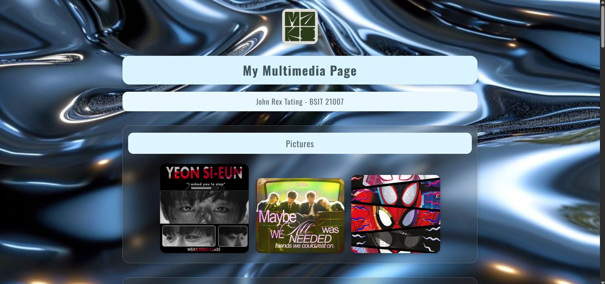
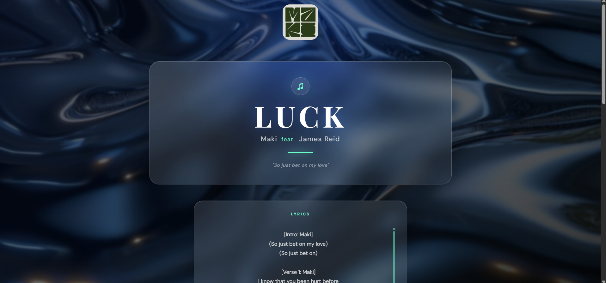
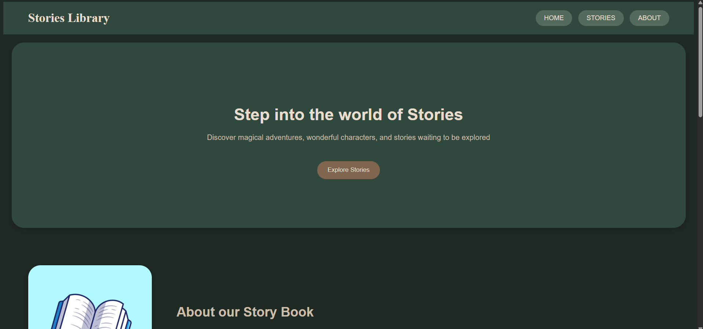
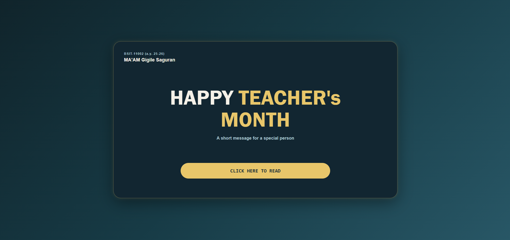

MY SCHOOL PROJECTS
My Projects
Here are some of the websites and projects I have created and worked on as a BSIT student.

PROJECT 01
My Multimedia Page
A multimedia webpage that showcases different types of digital media using HTML and CSS.
VIEW PROJECT →
PROJECT 02
Luck Lyrics
A simple web project that presents song lyrics using a creative webpage design.
VIEW PROJECT →
PROJECT 03
Stories Library
A simple story library website where different stories can be presented in an organized and interactive layout.
VIEW PROJECT →
PROJECT 04
Teacher's Day
A personalized webpage created for a Teacher's Day project using HTML, CSS, images, and multimedia.
VIEW PROJECT →PROJECT 05
Snap to Stop Alarm
An HCI project that combines an alarm clock, ESP32, Bluetooth, and a phone interaction. The user needs to find the correct object and send a photo to stop the alarm.
HCI FINAL PROJECT